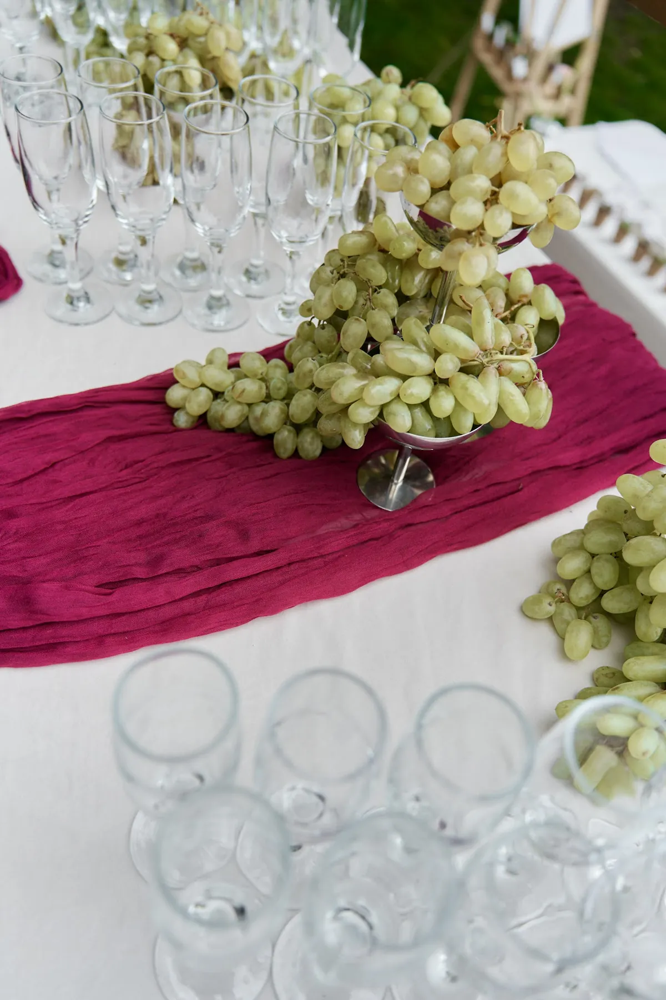
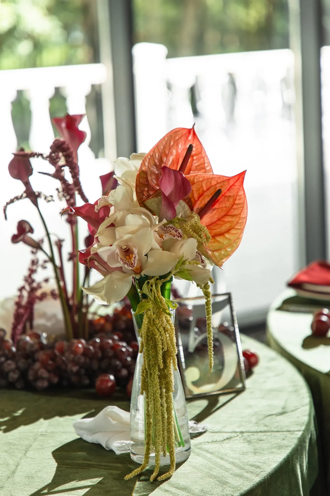

Осенняя свадьба — это тёплый свет, насыщенные цвета и уютные фактуры. Площадки и подрядчики свободнее, чем летом, а декор может быть богаче. Рассказываем, как оформить свадьбу осенью, чтобы она была тёплой даже в пасмурный день.
Палитра осени
Осенью особенно хорошо работают тёплые и глубокие цвета: винный, бордо, терракота, горчица, олива, шоколад. Их сочетают со светлой базой — молочным, льном, айвори, — чтобы зал не выглядел тёмным. Для спокойной осенней свадьбы подойдёт гамма «лён, олива, шоколад», для вечерней и торжественной — «бордо и шалфей».


Цветы и фактуры
Осенью флористику дополняют сезонные фактуры: ветки с ягодами, виноград, гранаты, колосья, сухоцветы, осенняя листва. Они делают композиции объёмными и «съедобно» живыми. Конкретные сорта цветов флорист подберёт под палитру и наличие в вашу дату.


Свет и тепло
Осенью темнеет рано, поэтому свет — главный инструмент декора: свечи на столах, гирлянды под потолком, тёплая подсветка зелени. На улице понадобятся пледы для гостей и запасной план на дождь. Подробнее о свечах — в статье про свечи на свадьбу.
Площадка
Для осени надёжнее площадки с крышей и большими окнами: стеклянный павильон, веранда, шатёр с отоплением. Церемонию на улице лучше проводить днём, пока светло и тепло, а банкет — в помещении.
Совет: сентябрь и октябрь — бархатный сезон. Свет мягче, чем летом, а осенняя листва сама становится декором на фото.
Как заказать
Мы оформляем свадьбы в Москве и Подмосковье круглый год. Расскажите о дате и площадке — предложим осеннюю палитру и посчитаем смету.
Частые вопросы
Какие цвета выбрать для осенней свадьбы?
Тёплые и глубокие — бордо, терракоту, горчицу, оливу, шоколад — в сочетании со светлой базой.
Чем украсить осеннюю свадьбу, кроме цветов?
Ветками с ягодами, виноградом, гранатами, колосьями, сухоцветами, свечами и тёплым текстилем.
Где лучше проводить свадьбу осенью?
На площадке с крышей и большими окнами: в стеклянном павильоне, на веранде или в отапливаемом шатре.